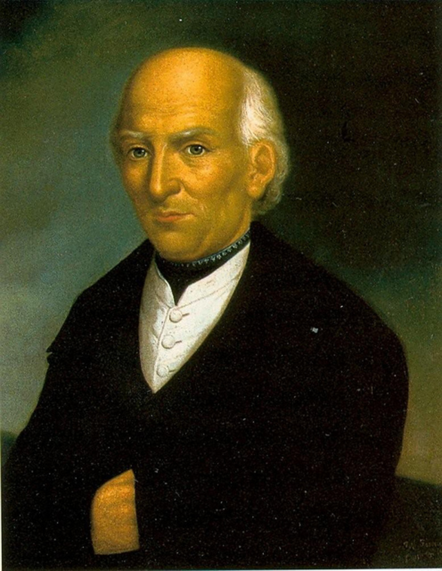
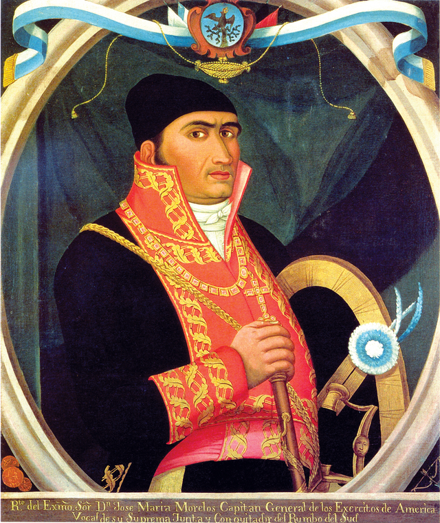
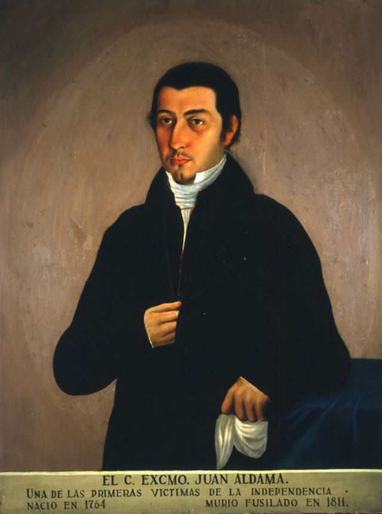
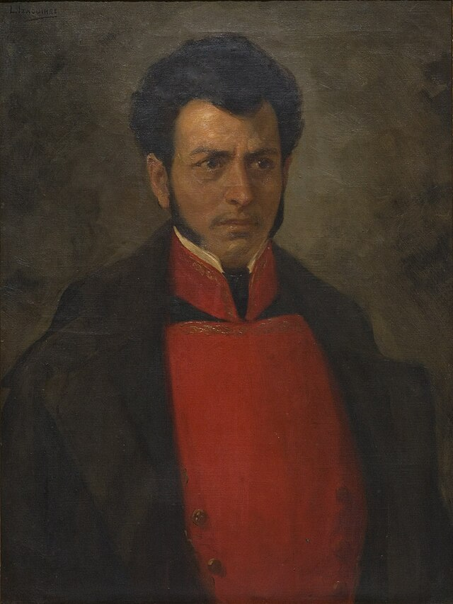
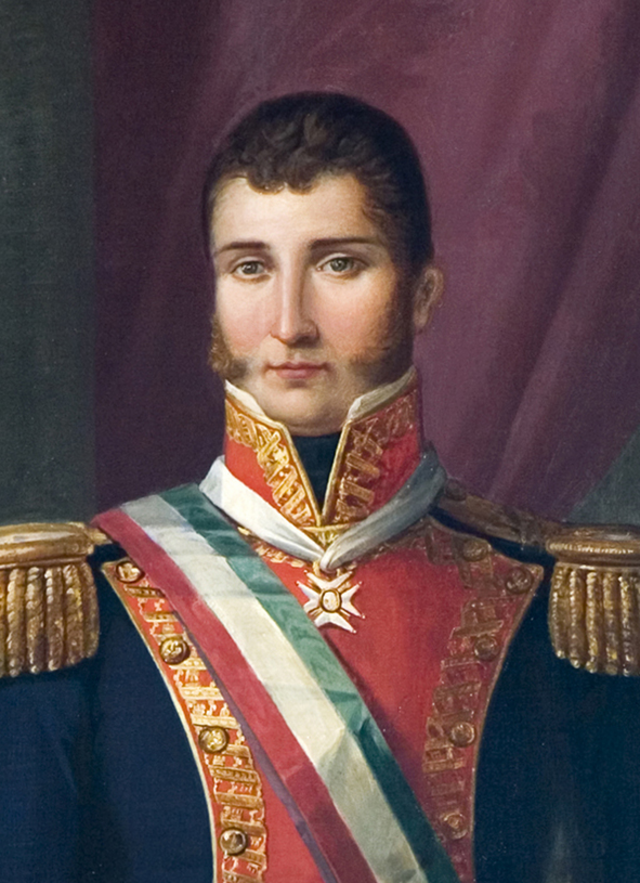
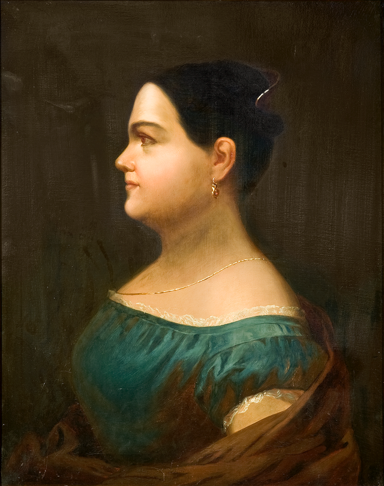
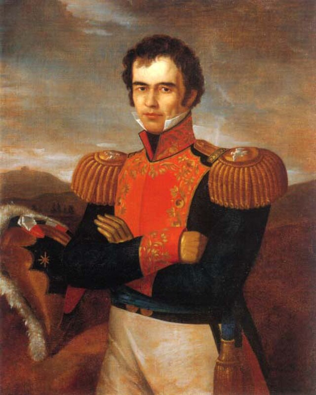

⟵
Personajes Clave
Miguel Hidalgo y Costilla

José María Morelos y Pavón

Ignacio Allende
Juan Aldama

Josefa Ortiz de Domínguez
Vicente Guerrero

Agustín de Iturbide

Leona Vicario

Guadalupe Victoria

Mariano Matamoros